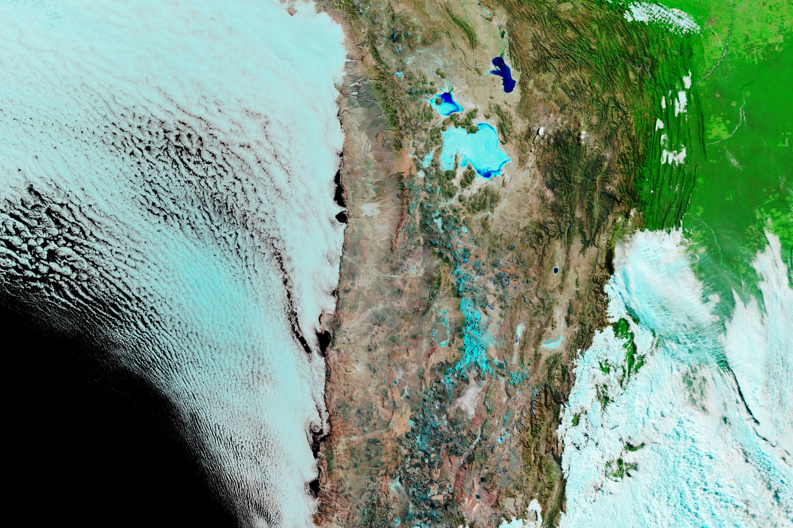

Rare Snowfall in the Atacama Desert
The Atacama Desert, located between the Andes Mountains to the east and the cool Peru/Chile Current to the west, is one of the driest places on Earth. The mountains produce a rain shadow, while the current chills the air, limiting evaporation and cloud development.
Occasionally, cold-core cyclones—cutoff lows—reach the region, bringing rain or snow. This occurred on June 25, 2025, when a rare snowstorm blanketed the higher-elevation Altiplano in white and delivered heavy rains farther south.
“Cutoff lows are more frequent in the subtropics, but from time to time they can reach northern Chile, where they explain most of the winter precipitation in the Atacama,” said René Garreaud, an atmospheric scientist at the University of Chile.
Among the snow-affected areas was the Chajnantor Plateau in northern Chile, perched more than 5,000 meters (16,000 feet) above sea level. Its exceptionally clear and dry skies make it a hub of astronomical research. The Atacama Large Millimeter/submillimeter Array (ALMA) temporarily suspended operations after the snowfall, reported as the first in over a decade for the region.
The MODIS (Moderate Resolution Imaging Spectroradiometer) on NASA’s Terra satellite captured images of the snow on June 26, 2025, and again on July 16, 2025. The images use false color to distinguish snow and ice (blue) from water clouds (white). A more detailed, natural-color view from OLI-2 (Operational Land Imager) on Landsat 9 on July 10, 2025, shows remaining snow on the plateau.
A detailed natural-color satellite image reveals snow on the Chajnantor Plateau, with strips of white snow amid bare brown land and four small volcanic cones visible.
Snow does not linger long, even at this high elevation, due in part to some of the highest levels of solar irradiance on Earth. The dry environment encourages sublimation, transforming snow directly into gas. Clear air, high elevation, certain cloud types, and the Altiplano’s Southern Hemisphere location all contribute to rapid snow loss.
By July 16, 2025, satellite imagery showed that most snow had disappeared, remaining mainly in low-lying, shaded areas, according to live-view cameras and posts from researchers at the ALMA Observatory.